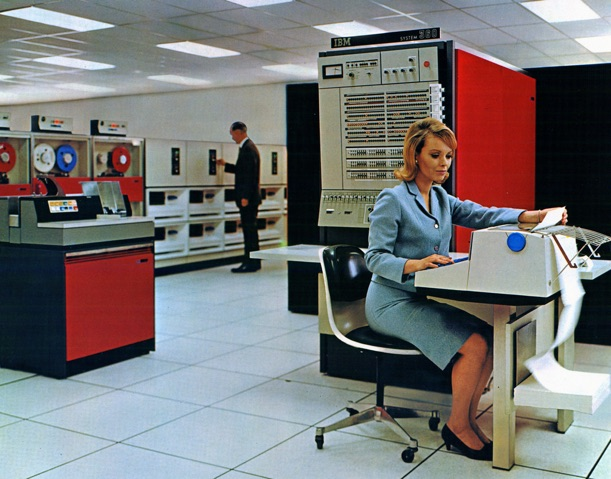
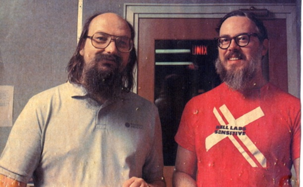
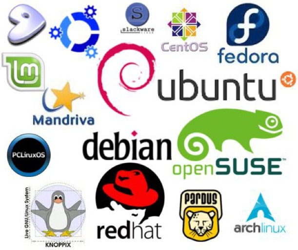
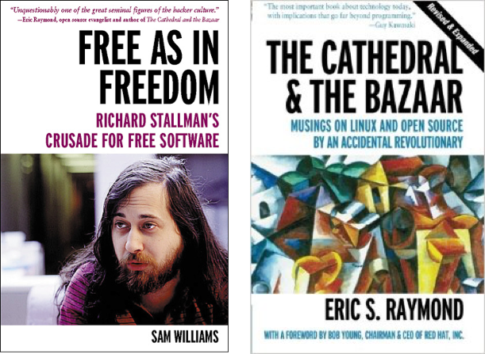

A brief history of Linux and Open Source
Thursday, February 2, 2017
Last weekend, I did a presentation at the KW Linux Fest on the history of Linux and Open Source technology. It was a small venue, but the speakers were excellent. I gave out a copy of my latest Linux+ Guide to Linux Certification textbook from Cengage during the event, and the audience seemed to enjoy my presentation. This blog post is essentially the presentation I gave in slightly different form for anyone who wants to know more about Linux and Open Source.
Linux has a very colorful history if you go back far enough - it is essentially a by-product of an evolutionary process that started back in the early days of computer science that led to the creation of mainframes, UNIX, FSF, GNU and the GPL.
Back in the post-war 1940s, companies were getting bigger than ever before. And this caused a headache for their accounting departments that had to hire more and more people to crunch the numbers on fancy adding machines:
In short, business needed computers to solve their accounting problems - and computer science was founded to fill this need. So the companies that made these adding machines started producing mainframe computers in the 1950s to crunch the financial numbers. One of the most common mainframe manufacturers was International Business Machines (IBM) - the same company that made the adding machines used in businesses ;-)

Mainframe computing was slow and expensive, and when you wrote a program to run on a mainframe, it wasn’t compatible with other mainframes made by different manufacturers (this is called portability in computing).
So, in the 1960s, a bunch of mainframe computer companies got together and funded a joint project called MULTICS (Multiplexed Information and Computing Service) that aimed to create a standard operating system that would allow people to run more things on a mainframe at once. It was too optimistic, and ultimately a complete failure.
However, the failure of MULTICS wasn’t the end - it inspired two computer scientists at AT&T Bell Labs (Ken Thompson and Dennis Ritchie) to carry on the MULTICS project in 1969.....but in a single direction. They came up with an operating system they called UNICS (UNI = one direction). UNICS was rewritten in Dennis Ritchie’s new portable computer language called C and renamed UNIX.

UNIX was the first serious development of a portable, multitasking, application-oriented operating system. However, AT&T was restricted by a federal court order at the time preventing them from marketing UNIX. As a result, AT&T instead sold the UNIX source code off to several companies, which developed their own flavors of UNIX, as well as gave free copies out to several universities including the University of California at Berkeley from which we have BSD (Berkeley Software Distribution) UNIX. UNIX ruled the corporate computing world in the 1970s and 1980s, with each vendor further developing their own flavor of UNIX:

Unfortunately, UNIX companies didn’t like to work together to further the development of UNIX since it was less profitable to do so. Companies at the time favored proprietary technologies that forced customers to buy more from a single vendor, often for very high prices. This UNIX fragmentation and commercialization was something that bothered Richard Stallman:
As a result, Stallman started the Free Software Foundation (FSF) in 1985 to encourage computer science students and freelance software programmers worldwide to develop free software for the UNIX platform. Richard had seen success as a result of collaboration between software developers in the Artificial Intelligence Labs at the Massachusetts Institute of Technology (MIT) earlier and believed that the sharing of ideas would result in faster software development.
Stallman also started the GNU Project, which aimed to create a free UNIX-like operating system (GNU stands for GNUs Not UNIX). Unfortunately, the GNU Project never came to fruition during the 1980s, because much like MULTICS, it was too ambitious.
By the late 1980s, however, the GNU Project led to the release of the GNU Public License (GPL). The GPL was a legalization of free software; it stated that anyone who develops software and publishes it under the GPL must make the source code for the program freely accessible to anyone who wishes to have it. Anyone who modifies the source code to make the program better must then redistribute his or her modified source code freely in return, keeping the software free forever. Consequently, the GPL is often called copyleft to distinguish it from copyright ;-)
In 1991, a Finnish student named Linus Torvalds created an improved version of MINIX that others affectionately called Linux. MINIX (mini UNIX) was a small UNIX for the Intel x86 platform that shipped with Andrew Tannenbaum's book "Operating Systems Design & Implementation" used in Universities worldwide.
The most important feature of Linux at the time was that it was released under the GPL. With a free operating system to develop, programmers worldwide pooled their talent in great numbers. Free software development became incredibly popular, but many people didn’t realize that “free” meant that the source code was freely available (the product didn’t necessary have to be free of charge). As a result, a better term was created to refer to free software: open source software.
Because it was open source, Linux development grew steadily during the early 1990s, but it still wasn’t anything close to a mature operating system. In fact, installing Linux in the early 1990s was like nailing Jello to a tree.......for masochists only! It wasn’t until Red Hat Linux was released in 1995 that installing Linux became relatively easy.
So what is Red Hat Linux? Well, it’s one of the earliest distributions of Linux.
To understand what a Linux distribution is, you have to first understand how Linux and open source software were developed in the 1990s. Although the 1990s Internet allowed for worldwide collaboration, it was still much easier to develop software with people that lived close to you. As a result, Linux and open source software were developed differently in different areas of the world. Linus Torvalds and his team developed the Linux operating system kernel and libraries, and developers worldwide developed the open source software packages that could be packaged with it. You could obtain different distributions (or distros) of Linux as a result. All Linux distros share the same kernel and libraries, yet may have different open source software packages that tie it all together. And these open source software packages were often developed in a certain part of the world.
Since the release of the Red Hat Linux distribution, hundreds of other Linux distributions started popping up - some common ones today include:

Suddenly, Linux was a viable free alternative to UNIX, and in 1996, it got a mascot called Tux (a penguin - Linus mentioned on a newsgroup that he was fond of penguins).
In 1998, Red Hat reported that there were over 750,000 installs of their Linux distribution. And as the Internet grew exponentially in the late 1990s, Linux became popular free OS for running Web servers (using the open source Apache Web server), and Internet Service Providers (ISPs) starting using it exclusively for Web and email servers.
This Linux momentum was so great, that the big companies (IBM, Compaq, HP, Dell, etc.) started pushing Linux on the server end. In 2001, IBM gave away $1 Billion to open source developers to further Linux development (just imagine how much more revenue they made as a direct result of Linux). To give you an idea of how big Linux was to IBM, check out this Linux commercial from 2000: https://www.youtube.com/watch?v=fJA9eiUktcA
It’s not hard to understand why companies find Linux and other open source software sexy compared to proprietary (closed source) software. The biggest fear that a company has is that its proprietary software will cease to be supported by the software vendor - with open source software, you have the source code, and can continue developing a product internally forever, even if other outside developers decide not to.
Moreover, open source software is collaboratively developed and scrutinized by thousands of developers; bugs and security loopholes are fixed quickly. Since those who ultimately use open source software are those who contribute to its development, it is also maintained and improved at a very fast rate compared to proprietary software.
Because Linux is open source, it can also be easily tailored for any use. Highly customized Linux distributions are very common in embedded devices and portable systems such as GPSes, traffic light controls, in-car systems, home appliances, sound/video production hardware, and more. Google Android, which runs on hundreds of millions of smartphones, tablets and devices today, is also a Linux distribution!
Linux is also the only operating system that supports all hardware platforms. You can install Linux on Intel i386, x64, Sun SPARC, DEC Alpha, SGI MIPS, Macintosh PowerPC, and more! A complete list of Linux distributions and the platforms supported can be found at http://www.linux.com or Wikipedia.
In 2005, the number of Linux installs was estimated by the Linux Counter Organization to be over 29 million, and in 2008 to be over 64 million. When the Fedora 16 Linux distribution was released in 2009, so many users downloaded it that it reduced the overall speed of the Internet by almost 14%. In March 2014, Ubuntu Linux boasted that more than 22 million users used their distro alone.
With the large number of mobile (e.g. Android) and embedded devices running Linux since 2008, the number of Linux installs difficult to estimate, but in 2016, Gartner estimated that Linux is installed on:
-
•76% of embedded devices
-
•95% of supercomputers
-
•78% of smartphones (Android)
-
•52% of all devices
The focus of the open source software developer community has definitely shifted focus since the beginnings of the Free Software Foundation. In the 1980s, it was all about creating free network tools and the GNU Project. In the 1990s, it was all about developing the Linux operating system. In the 2000s and later, the focus has shifted to diversification (embedded Linux, mobile Linux, desktop Linux, and large server Linux) as well as to creating a rich suite of software for the Linux platform.
To learn more about GNU and Linux, you can read the following books:

In many ways, Linux is the future of UNIX - since Linux is essentially an open source UNIX (free), there are far more Linux servers in existence than UNIX today.
However, UNIX is still alive and well:
-
•Oracle Solaris is a UNIX flavor that was developed by Sun Microsystems and sold on Sun Microsystem’s high-performing UltraSPARC hardware used in large/specialized systems such as bank databases, medical imaging systems, and large e-Commerce Web sites such as eBay – Sun Microsystems was recently purchased by Oracle, which now sells Oracle Solaris on SPARC systems for Oracle database application.
-
•Like Linux, BSD UNIX is also free and usually used as a Linux alternative (you will find it coexisting with Linux in many environments).
-
•Mac OS/iOS are simply newer versions of NeXTSTEP UNIX from the 80s, and are used on Apple computers, iPhones and iPads. Oracle Solaris, BSD UNIX and Mac OS/iOS obtain their software and libraries from the Open Source Linux community.
-
•QNX is a common real-time and embedded UNIX flavor that is often used in cars and other devices that require reliable operation such as routers and traffic controllers.